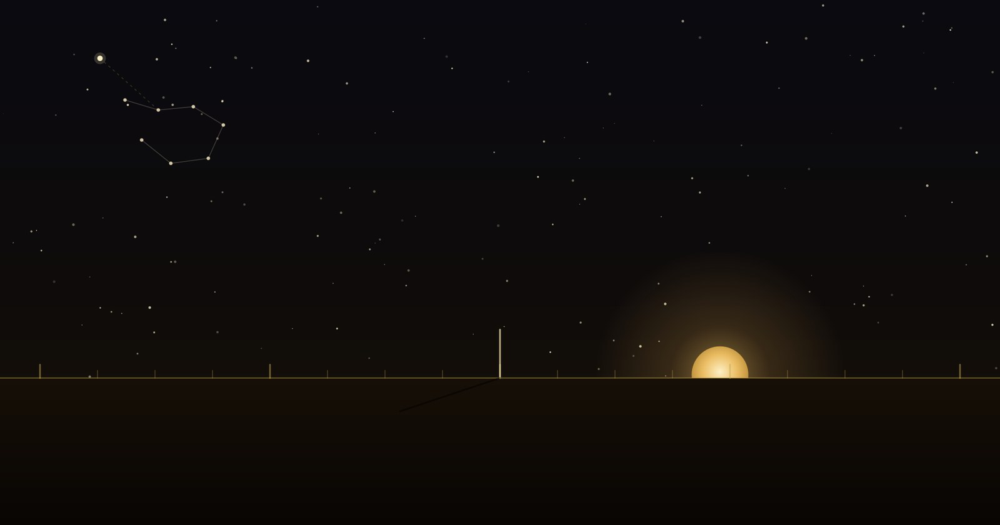

Finding North
Direction before the compass.
Companion to The View From Above
Long before the compass, every people on earth already knew which way was which. They simply answered the question differently.
Gather those answers and a pattern appears: the way a culture finds direction is a portrait of how it pictures the whole cosmos.
The rose we inherited is only one late answer — and not the most ingenious. This entry is a map of the others.
The oldest answer, and the most universal.

Every child who has watched a sunrise has found east. The sun's daily arc is the first and most widely shared compass there is: it rises in the east, sets in the west, and at noon its shadow points along the meridian. The word orientation still carries the method inside it — to orient is to face the oriens, the rising sun.
But the sun is a moving target. Its rising point slides north and south through the year, reaching its extremes at the solstices. That drift is not noise — it is a calendar. Fix the extreme points in stone and you have both a direction and a date. Builders did exactly that, on three continents, thousands of years apart: the midsummer sun rises down the axis of Stonehenge, the midwinter sun floods the inner chamber of Newgrange through a purpose-cut roof-box, and at Chaco Canyon a spiral carved behind stone slabs is split by a dagger of light at the solstices.
And you do not need a monument. A single upright stick — a gnomon — will do it. Mark the tip of its shadow through the day; the shortest shadow points true north, and a simple construction, the "Indian circle," finds the north–south line to a precision that still holds up. The humblest tool in this whole survey is a stick in the ground.
Point to the one place that doesn't move.
The sun tells you east and west but wanders. The stars offer something steadier: as the night turns, the whole sky wheels around a single fixed point — the celestial pole. Find the star nearest it and you have found north, and it will not move all night. The Egyptians called the stars that never set "the Imperishable Ones," and watched them circle the pole.
There is a subtlety the sky itself supplies: the pole star changes over millennia as the earth slowly wobbles. Ours is Polaris. In the age of the pyramid builders it was Thuban, in the constellation Draco. And the alignment they achieved with it is the quiet astonishment of the ancient world — the Great Pyramid faces true north to within a few arc-minutes, a fraction of the width of the moon.
The honest open question
That precision is real, and it is easy to reach for the miraculous. We won't. Several naked-eye methods reproduce it — bisecting the rising and setting points of a circumpolar star, or the solstice-shadow construction from §01. Each works; each leaves traces the builders did not. The genuine mystery is not whether it was possible without lost technology — it plainly was — but which method they actually used. That question is still open, and it is a far more interesting one.
The night sky even builds its own signpost. The two outer stars of the Big Dipper's bowl point almost exactly at Polaris — a ready-made arrow generations learned before they learned to read. South of the equator, the long axis of the Southern Cross does the pointing instead.
The navigators who carried the compass in their heads.
The most sophisticated direction-finders of the pre-modern world used no dial at all. Across the open Pacific, Micronesian and Polynesian navigators divided the horizon into a ring of "houses" — the fixed points where particular stars rise and set — and steered by which star sat in which house. The entire system lived in memory, passed hand to hand. It very nearly died; that it survives is due to navigators like Mau Piailug of Satawal, who guided the canoe Hōkūleʻa from Hawai'i to Tahiti in 1976 with no instruments, and taught the method onward.
The same idea crossed the Indian Ocean. Arab navigators read a sidereal compass of rising and setting stars and measured a star's height above the horizon with a knotted card, the kamal. Their master, Ahmad ibn Mājid — "the Lion of the Sea," writing in the fifteenth century — left sailing directions that read the sky the way a landsman reads a road.
A rose printed on paper is a memory made external. These navigators kept the whole rose in the mind.
How the rose we know was actually born.
Before the directions were angles, they were winds. The Greeks personified four of them — Boreas from the north, Notos from the south, Euros from the east, Zephyros from the west — and raised them into architecture: the octagonal Tower of the Winds still stands in Athens, a marble weather-station with a wind god on each of its eight faces. Mesopotamia named its four winds and its kings ruled "the four quarters of the world." The wind rose of the portolan charts — fleur-de-lis at north, a cross toward the east — descends from these named winds, not from any magnet.
The honest correction
Search "ancient Chinese compass" and you will meet a lodestone spoon resting on a bronze plate — the si nan. It is beautiful, it is everywhere, and it is a twentieth-century reconstruction. It was built to illustrate a single line in a first-century text describing a "south-pointer" that comes to rest facing south — no such object has ever been excavated. The firmly attested magnetic compass appears much later, in Shen Kuo's writing of 1088. The reconstruction may well be faithful. But the picture is doing the work of an artifact it isn't — the same quiet substitution we flag wherever we find it.
One genuine fork survives in that history: Chinese compasses point south by convention, not north. Same needle, same physics — a different choice about which end of the world to name.
When a direction is also a god, a color, and a season.
For much of the world, a direction was never a neutral bearing. It had a guardian, a color, an animal, a season. In China the four quarters are the Four Symbols — the Azure Dragon of the east, the Vermilion Bird of the south, the White Tiger of the west, the Black Tortoise of the north — with a Yellow Dragon at the center, each bound to an element and a time of year. Hindu and Buddhist cosmology posts the Dikpalas, guardians of the directions, at the compass points and extends them to ten. Norse myth sets four dwarves — Norðri, Suðri, Austri, Vestri — to hold up the corners of the sky.
The Maya did the fullest version: each direction carried a color, a world-tree, and a bird, with the four Bacabs holding up the sky at the corners of the world — east red, north white, west black, south yellow, and a green center where the great ceiba rose. The exact colors shift from one source to the next, and we leave that variation standing rather than flatten it into a single tidy chart; the disagreement is part of the record.
To ask a Maya scribe "which way is north?" was to ask about a color, a tree, and a god at once. Direction was not information. It was cosmology.
The oldest marks we still draw — and what they mean.
Strip the gods and winds away and a handful of shapes remain — the abstract signs for orientation itself. The quincunx: four points and a center, the Mesoamerican cosmogram and the bones of a mandala. The sun-cross, an equal-armed cross in a circle, among the oldest marks in Eurasia. The Roman surveyor's cardo and decumanus, the north–south and east–west axes from which whole cities were laid out — and from cardo, "the hinge," we get the word cardinal itself. The medicine wheel's quartered circle. The mandala with its Mount Meru at the center.
Notice what they share: a center, and a way out from it. That is the deep structure under every method in this entry — the sun's cross of solstices, the sky's wheel around its pole, the navigator's ring of star-houses, the four-guardian quarters. Humanity found a hundred ways to answer "which way is that?" and nearly all of them resolve to the same figure: you, here, and the world opening around you.
The compass rose everyone knows is one late leaf on a very old tree. We show the whole tree, mark where the record is firm and where it is still argued, and let you find your own way among the readings. That is the method. Direction, it turns out, was the first thing we ever mapped.
Look down: why people drew figures across the earth that only the sky could read. Read together, the two make one argument — that the oldest conversation we ever had was between the ground and the sky.
Sources & further reading
- Great Pyramid orientation & method. Glen Dash's field tests of Egyptian alignment techniques (circumpolar-star and solstice-shadow methods); orientation studies from the Instituto de Astrofísica de Canarias. The Great Pyramid is aligned to true north to within roughly 1/15 of a degree.
- Solar alignments. Newgrange (winter-solstice roof-box, Boyne Valley), Stonehenge (midsummer axis over the Heel Stone), and Chaco Canyon (the Fajada Butte "Sun Dagger" spiral).
- Pacific wayfinding. The Polynesian Voyaging Society; Mau Piailug and the 1976 Hōkūleʻa voyage; the revival of the star compass under Nainoa Thompson.
- Indian Ocean navigation. Ahmad ibn Mājid and the kamal; the sidereal "star compass" of rising and setting stars.
- The si nan. The first-century description in Wang Chong versus its twentieth-century reconstruction; the attested magnetic compass in Shen Kuo, 1088.
- Directional cosmologies. The Chinese Four Symbols; the Hindu-Buddhist Dikpalas; the Maya Bacabs and world-quarter colors (per-source variation noted); Norse sky-dwarves; the Greco-Roman Anemoi and the Tower of the Winds, Athens.
Hero illustration original to The Ancient Atlas.